Projekter
1 Semester
På mit 1 semester som multimediedesigner har vi været i gennem forskellige temaer, hvor vi har lært om grundlæggende metoder og værktøjer indenfor web, UX/UI, animation og produktion af indhold. Dyk ned i hvert tema, og læs mere om min læring, min proces og løsning dertil.

Grundlæggende Animation
I dette tema blev vi introduceret til Javascript, som er med til at skabe mere dynamiske websites, css animationer og hvordan man rentegner i adobe illustrator.
Opgave & Idé
I dette tema skulle vi lave en side om et valgfrit emne og anvende metoder og værktøjer til research, design og test af en digital prototype.
I dette tema skulle vi udvikle et animationsspil med enten dropdown-elementer eller elementer, der fløj ind fra siden, ved hjælp af JavaScript og CSS-animationer.
Til idéudviklingen brugte jeg cross-metoden, hvor jeg i undervisningen skabte 6 idéer baseret på en ordliste med verber, settings og objekter. Ved at kombinere tre ord formede jeg forskellige koncepter og valgte én idé at arbejde videre med.
De udvalgte ord: Gribe, på en mark, vindruer.
Idé: Vindruerne er blevet levende, og vinavleren må gribe dem på sin mark. Spillet foregår i Italien på en vingård, hvor gæster ankommer, og vinavleren skal samle vindruerne.
Design
I design processen, startede vi ud med at lave en paper prototype, hvor man hurtigt laver en skitsering af hvordan man vil have spillet til at se ud, og hvilke funktioner/animationer man vil have med. Du kan se den her!
Herefter kom jeg på 3 værdiord som spillet skulle associeres til - Natur, Idyllisk, ungt/festligt.
Ud fra disse lavede jeg to moodboards, et der gav inspirationen til lokationen, altså naturen og vinmarker, og et andet med elementerne, som vindruer, vinflasker mm.
Min stilreference blev baseret på flat design med et cartoon-lignende der look kombinerer enkelhed og farverigt udtryk. Stilen bruger rene linjer, geometriske former og flade, mættede farver uden gradienter.
Herefter var det ellers bare i gang med at skitsere mine figur og UI-elementer, og baggrunde.
Når det var gjort lærte jeg hvordan man rentegnede sine skitser i adobe illustrator, ved hjælp af pentool og hvordan man herefter downloade dem som svg’er.
Scroll her, og se mine skitser fra start til rentegning i illustrator
 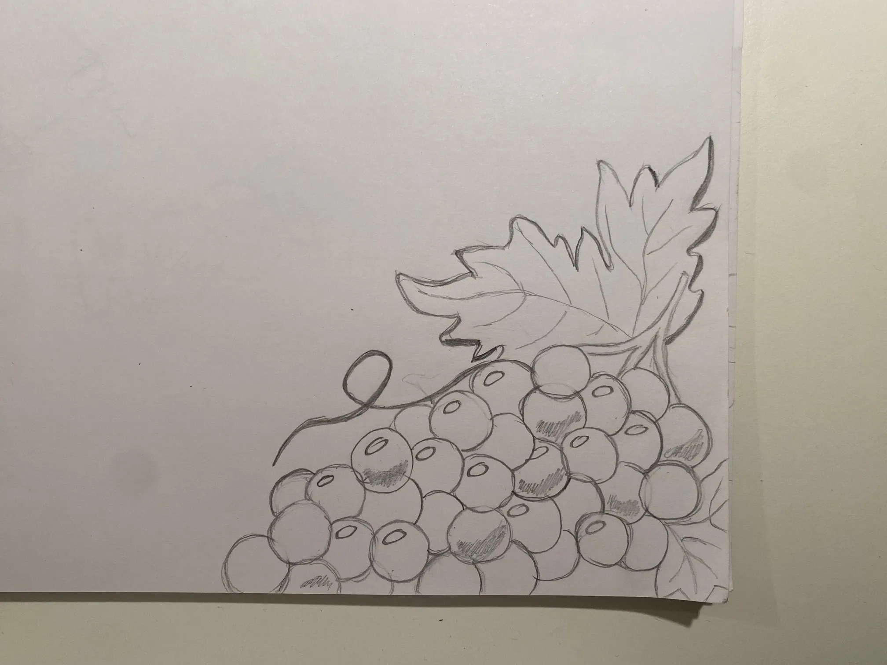
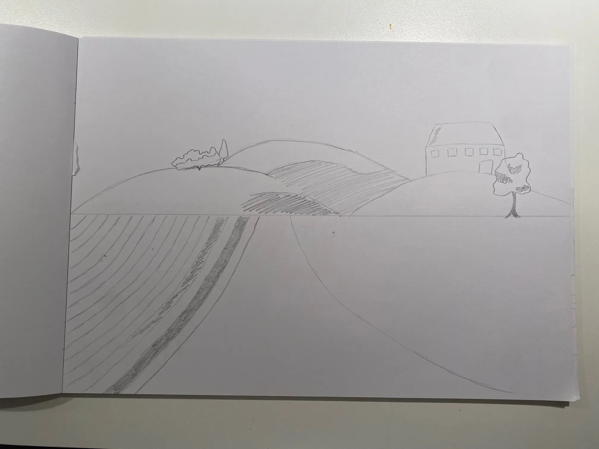
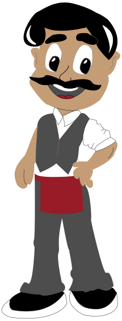
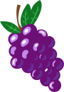
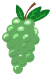
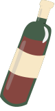
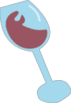
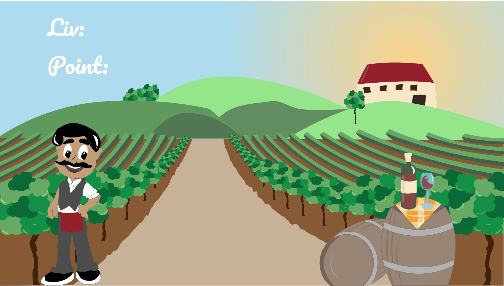
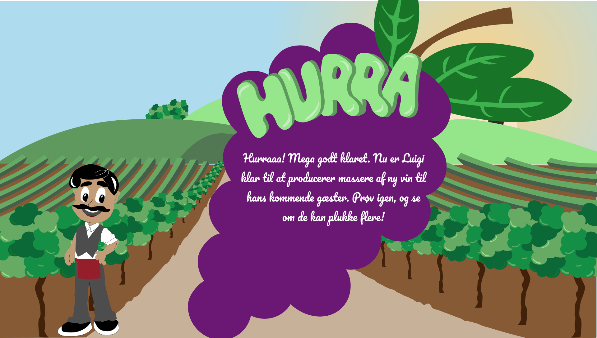
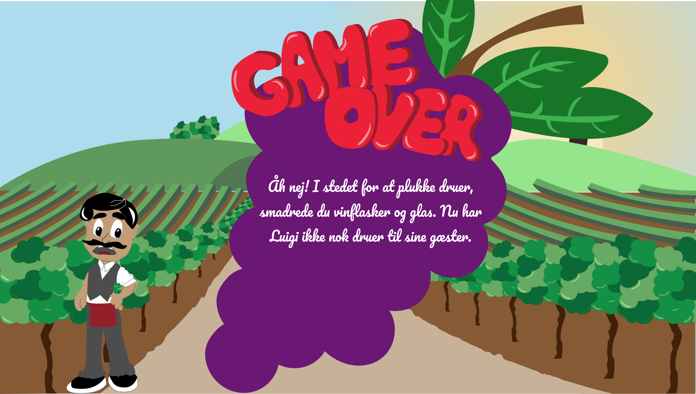
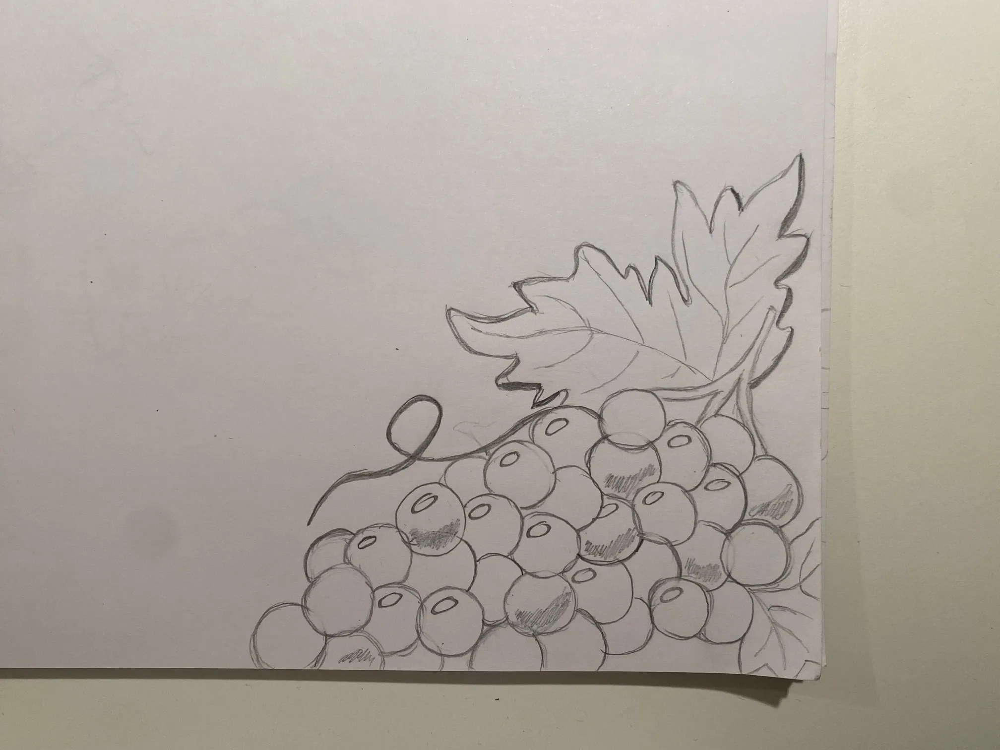
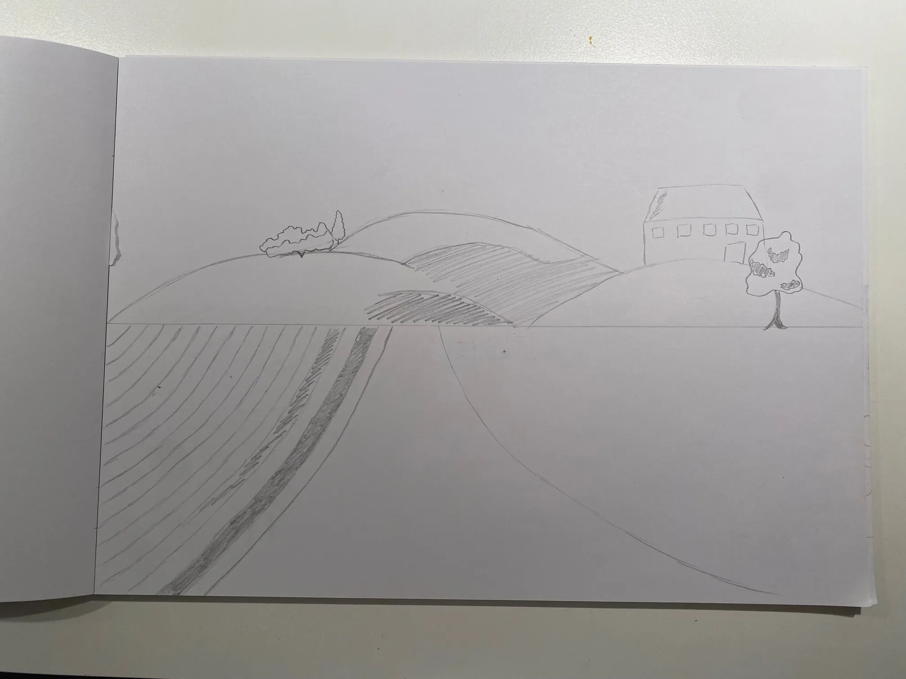
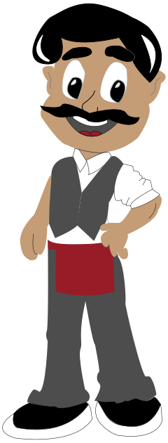
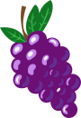
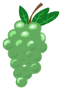
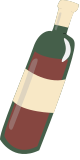
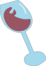
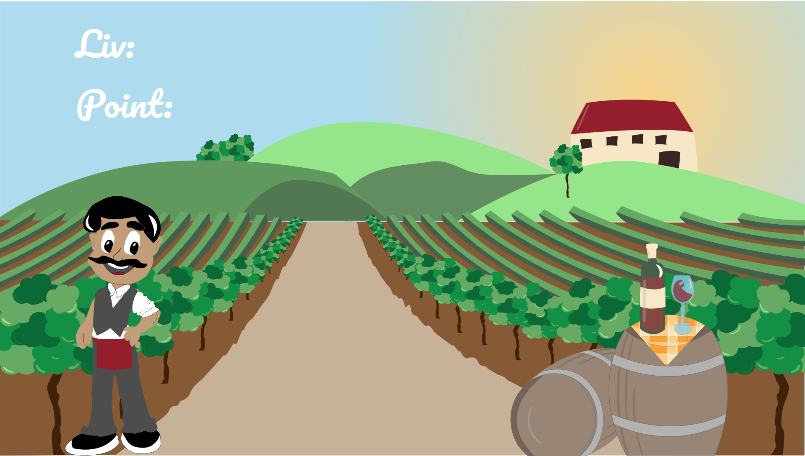
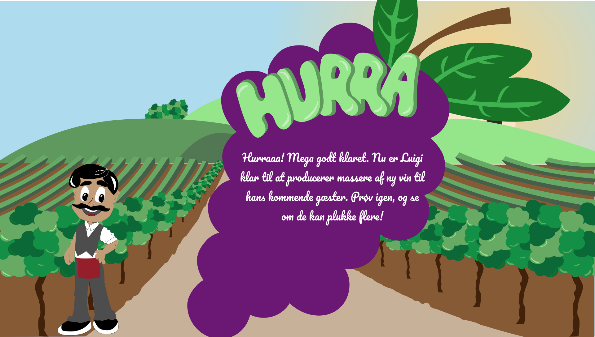
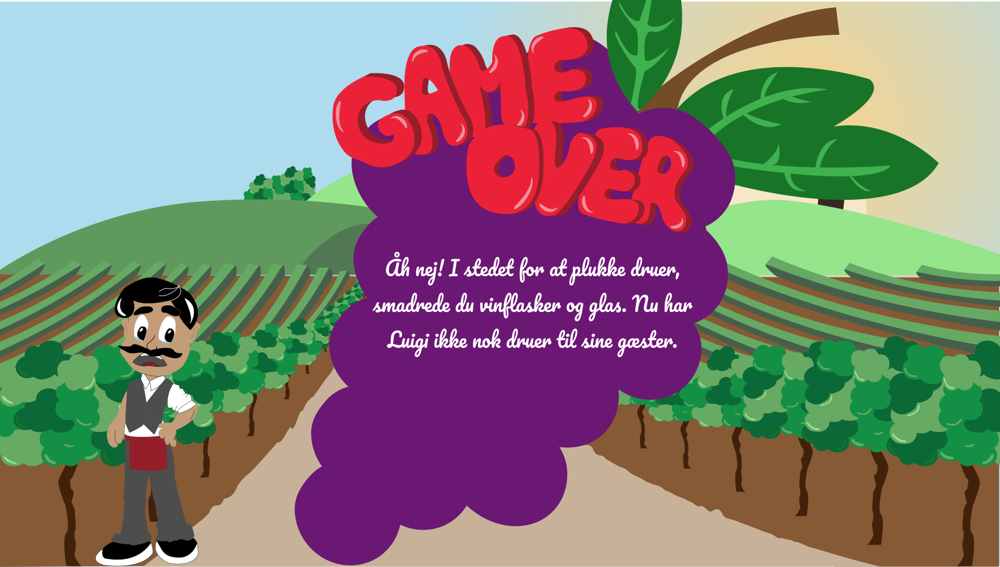
Aktivitets -og statemachine diagrammer.
Når vi havde designet vores spil, skulle vi i gang med at lave et aktivitetsdiagram. Som beskriver de aktiviteter der sker i spillet bestående af detaljerede handlinger og beslutninger i en bestemt rækkefølge, men som nødvendigvis ikke altid er det samme der sker, hver gang aktiviteten udføres.
Her kan man bl.a. se at spillet består af gode og dårlige elementer, og hvad der sker når man klikker på den ene eller den anden.
Inden vi skulle i gang med at kode javascript, lavede vi også et statemachine diagram. Som minder meget om aktivitetsdiagrammet, men er endnu mere detaljerede, og har flere funktioner.
Her kan man se at der er kommet flere detaljer på. Man kan også se statemachine diagrammet som en slags skabelon, for hvilke funktioner og events man skal lave i sin javascript.
Kode
I spillets html struktur, var der ikke noget indhold, andet en en masse div’er, med diverse id’er. Dette gjorde man, da alle spilelementer, UI-elementer, og baggrunde, blev lagt ind som background-image i css’en.
Derudover blev vi også introduceret til css-animationer, hvor vi bl.a. brugte rotate, scale og translate, til at gøre vores spilelementer dynamiske.
I javascripten tager vi så fat i både id’erne og animationerne, så vi kan få tingene til at ske på bestemte tidspunkter, når man gør en bestemt handling. Her bliver der bl.a. brugt, funktioner, metoder (addClass, removeClass), variabler, events(load , click, animationend, animationiteration), betingelser(if-else) og math.random.
 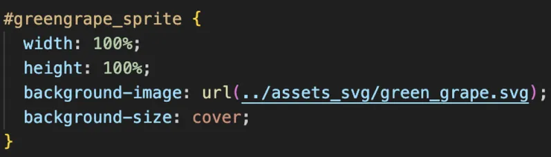
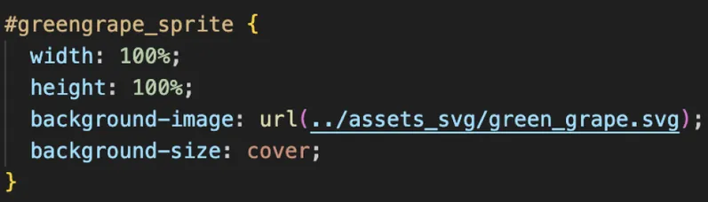
Hvad har jeg lært?
I dette tema, har jeg lært at skitsere, samt rentegne det i illustrator. Jeg har lært at idé genererer ud fra en ordliste, baseret på verber, settings og objekter.
Jeg har lært at kode i javascript, ud fra aktivitets -og statemachine diagram. Samt lave css positionering og animation, for at placere og give spillet bevægelse.